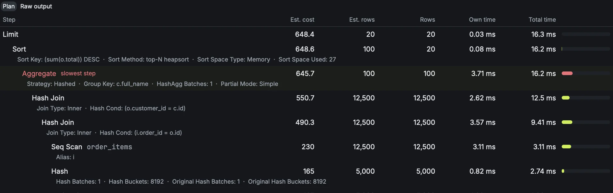
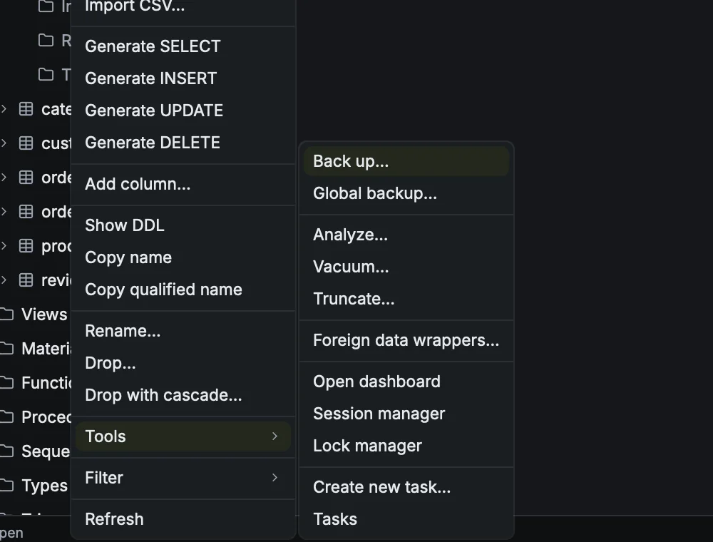
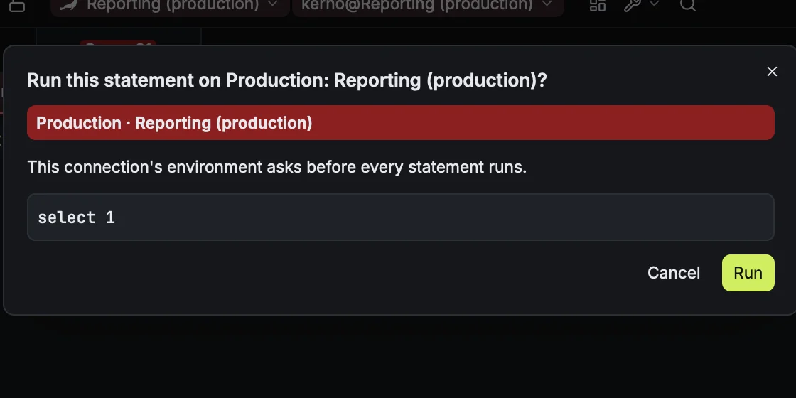
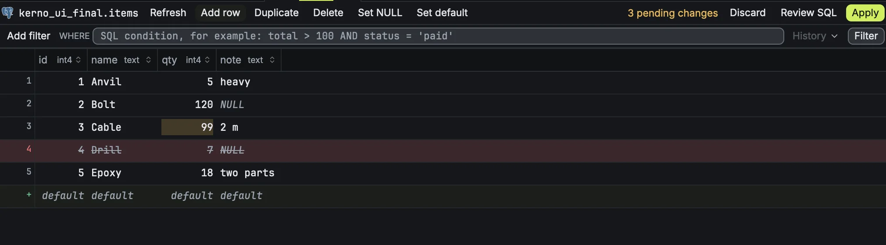
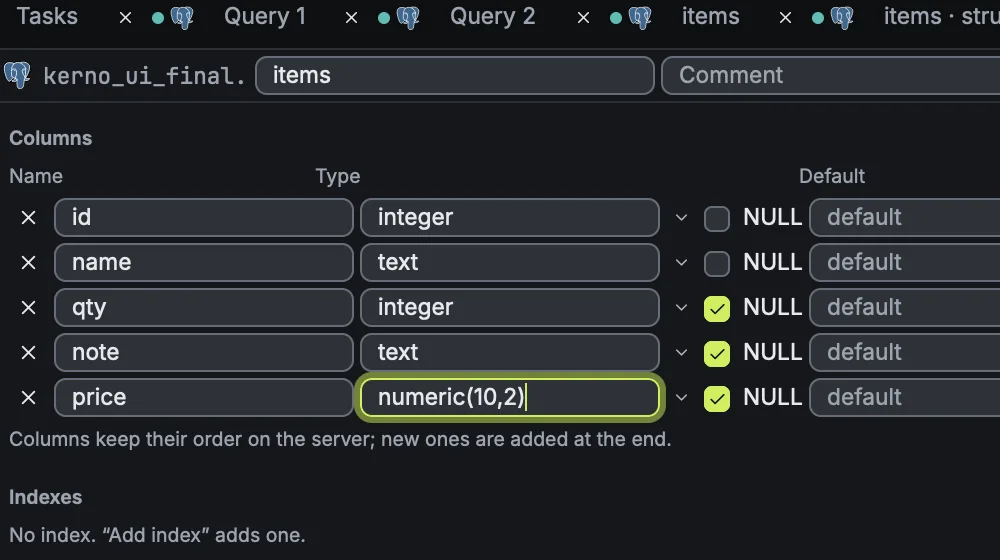
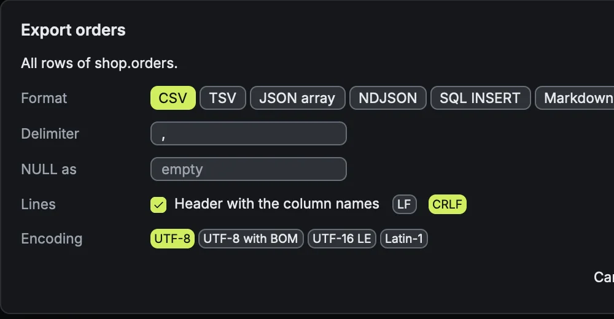
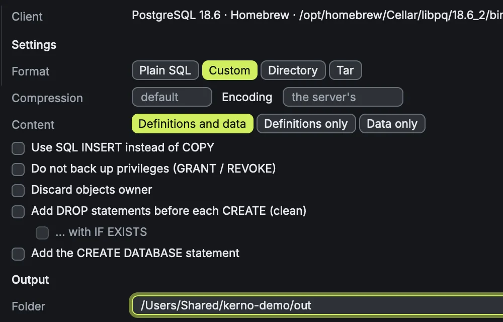
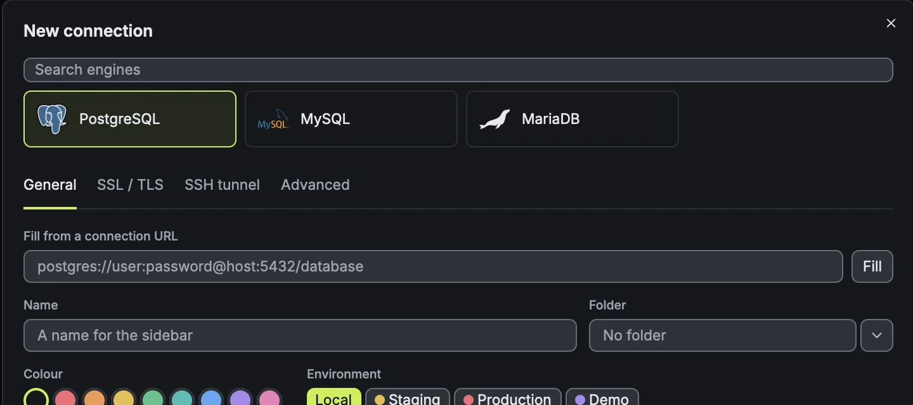
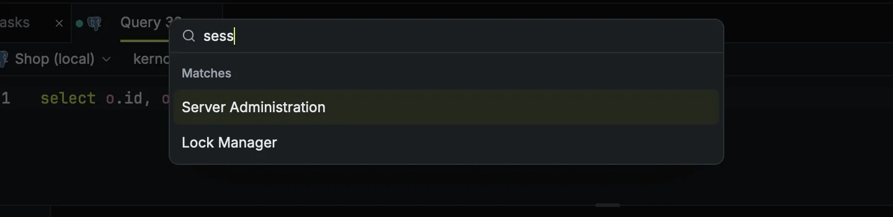

The database client that never freezes.
Kerno is a native, open-source client for PostgreSQL, MySQL and MariaDB on macOS and Linux, written in Rust. No query runs on the UI thread, so the window stays responsive while results stream in, and anything still running can be cancelled.
Connections
- Shop (local)connected
- kernodefault
- shop
- Tables4
- Views1
Pick a connection
No tint and no questions, except before a statement that would empty a table.
Run a sample
PostgreSQL runs in this page through PGlite (WebAssembly, about 5 MB, fetched on your first run). The timing shown is your browser's.
A tour of the real app
Kerno's feature set follows DBeaver Community, from the navigator to the backup wizards. These are captures of the app itself. Select one to see the full window.
Plans you can read
EXPLAIN and EXPLAIN ANALYZE open as a tree with cost, rows and time for each node, and the slowest node is marked. The raw output is one tab away.

A right-click everywhere
One tree holds folders, connections, databases and objects. Every node has a context menu, down to a Tools submenu with backup, vacuum and the session manager.

Production asks first
An environment gives a connection a colour and rules. On production the window's chrome turns red, and a statement shows its SQL and waits for you.

Edits wait until you apply them
Change cells, add rows, delete rows: the server sees none of it yet. Review the exact SQL, then apply everything in one transaction or discard it. If the apply fails it rolls back and your edits stay.

Tables as a form
Add, rename and retype columns, indexes and foreign keys in a form. The DDL preview follows as you type and runs once you confirm it.

Data in and out
Export a table or a result as CSV, JSON, NDJSON, SQL INSERT or Markdown, streamed to disk with a cancel button. Import CSV with column mapping and a preview.

Backups with your own pg_dump
Backup and restore are wizards over the pg_dump, pg_restore and mysqldump already on your machine, with the tools' real options. Kerno finds every install and warns you when one is older than the server.

TLS and SSH built in
Connections support five TLS modes with your own CA, certificate and key, and SSH tunnels by password, key file or agent. Passwords go to the system keychain, or stay in memory if you would rather be asked each time.

Everything from the keyboard
The command palette reaches every action. ⌘↵ runs the statement under the cursor and ⌘. cancels it. This page has a palette of its own: use Search.

Measured against a budget
Each bar is a budget from the project's spec, and the filled part is what the bench measured on a release build on Apple Silicon. The method and every run are in docs/BENCH.md.
-
Not measured yet
Cold start to the first interactive frame. Budget: 400 ms.
-
Not measured yet
Memory at idle with one connection and one query tab. Budget: 150 MB.
-
Not measured yet
First rows on screen after the server starts sending. Budget: 150 ms.
-
Not measured yet
Average frame while scrolling 1,000,000 rows. Budget: 16 ms.
Scroll a million rows
Kerno lays out only the rows and columns that are on screen, so a result scrolls the same whatever its size. This grid does the same thing in your browser, with 1,000,000 generated rows.
- Top row
- 1
- Rows in the page
- 0
- Frame rate here
- n/a
Your data stays on your machine
A database client sees your credentials and your data. Kerno keeps both to itself.
No telemetry
Kerno has no analytics and no crash upload, so there is no setting to opt out of.
One request
The update check asks GitHub for the latest release and sends no identifier. You can turn it off.
Your keychain
Passwords and passphrases go to the macOS Keychain or the Linux Secret Service. They are never written to disk in plain text or to a log.
Checked updates
An update installs only after its SHA-256 matches the release's SHA256SUMS file.
Open source
MIT or Apache-2.0, your choice. The code is on GitHub and every dependency licence is checked with cargo deny.
This page too
This page sets no cookie, loads no tracker and serves its own fonts. Its one outside file is PGlite, fetched when you run a query.
Install Kerno
Builds for macOS and Linux are on the releases page, next to a SHA256SUMS file. Check your download against it before you open it.
Open the latest releaseApple Silicon. Download Kerno-<version>-macos-arm64.dmg and SHA256SUMS into the same folder, then:
cd ~/Downloads
shasum -a 256 --ignore-missing -c SHA256SUMS
open Kerno-*-macos-arm64.dmgDrag Kerno to Applications. It keeps itself up to date from the same releases page, and checks each update the same way.
Download kerno-<version>-linux-<arch>.tar.gz and SHA256SUMS into the same folder, then unpack into a prefix:
sha256sum --ignore-missing -c SHA256SUMS
tar -xzf kerno-*-linux-*.tar.gz -C ~/.local --strip-components=1The tarball holds the binary, a .desktop file, the icons and the licences.
The repository pins its Rust toolchain, and rustup installs it on first use. On macOS you need the Xcode command line tools.
git clone https://github.com/EvanPluchart/kerno.git
cd kerno
cargo run --release -p kernoOn Debian or Ubuntu, run sudo scripts/install-linux-deps.sh first for GPUI's native dependencies.